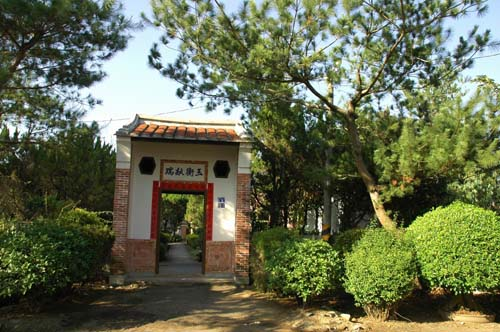
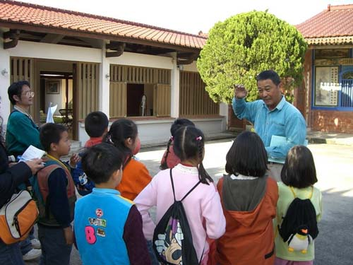

黃家古厝
已有八、九十年歷史，為埔里少數歷史建築之一，被列為三級古蹟。
為清光緒年間埔里地區「番秀才」（原住民考上秀才）望麒麟之住宅。望麒麟為埔社番人，幼年在埔里恆吉城讀書，後赴台南取得文秀才功名，時人為「番仔秀 才」。光緒初年與總兵吳光亮成為好朋友，吳光亮還幫望氏勘查地理設計格局，選定現址建屋。由於望秀才無子，故獨生女望阿參招贅漢人黃敦仁為夫，為顧及兩家 香火之傳遞，生育八子中，長子姓望，其餘皆姓黃，為臺灣埔、眉族與漢人通婚典型例子。
 光緒21年，望麒麟在前往國姓北港村迎接日軍來埔里時，回程被仇家買通原住民暗殺。房子於大正6年(1917)地震時被震毀。
大正8年(1919)，望麒麟的女婿黃敦仁聘請東勢角的劉沛師傅，花三年時間於現址蓋一間三合院建築，建材為土角、紅磚和木材，並施彩繪，即今之 黃宅。 921大地震時，除正身外，二側土角厝建築皆傾倒，已請專家仿原貌重建完成。
（資料來源：南投縣文化局網站)